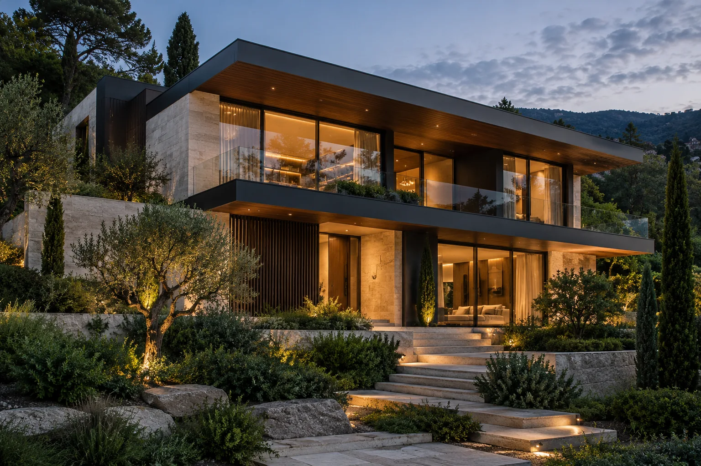
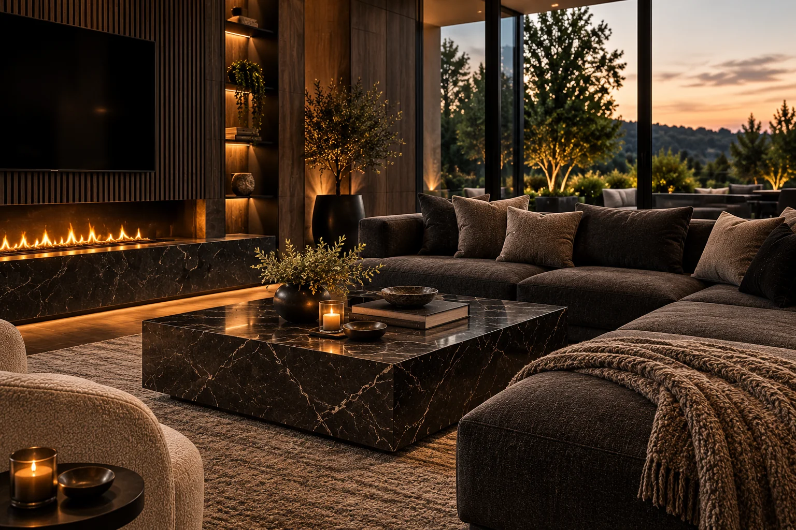

Концепция

MARI LIMAR / ПРОЕКТЫ И КОНЦЕПЦИИ
Портфолио
Пространства с характером. Архитектура, дизайн интерьеров и кухни — в едином визуальном языке.
Визуальные направления
У каждой идеи
свой характер.
В MARI LIMAR дизайн пространства и архитектура мебели рассматриваются вместе.
В подборке — концепции архитектуры, интерьеров и кухонных пространств.
Архитектура, интерьер, детали.
Показано: 6Направление
Статус
Визуализация
Визуализация
Визуализация
Концепция
Визуализация
Материалы пока не опубликованы
Попробуйте выбрать другое направление или статус.

Интерьерная концепцияФирменный подход / MARI LIMAR
Мебель — часть архитектуры.
«Я создаю архитектурную мебель, не просто набор элементов».
Архитектор мебели думает о пространстве целиком: планировке, масштабе, движении человека, световых сценариях и ежедневном комфорте.
Когда мебель проектируется одновременно с интерьером, она органично вписывается в помещение и отвечает задачам проекта — не оставаясь лишь красивой картинкой.
01Единая концепция интерьера и мебели
02Точные пропорции и эргономика
03Детали, материалы и интеграция
Ваш проект
Создадим историю
вашего пространства.
Хотите обсудить архитектуру, интерьер или кухню? Расскажите об идее — вместе определим направление работы.
Расскажите о своей идее
Заполните форму — подготовим сообщение для студии.